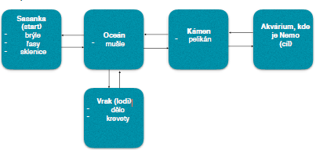

Finding NEMO!

Základní informace:
Hru lze spustit dvěma způsoby - buď jako aplikaci s Grafickým rozhraním nebo s parametrem -text, který vyvolá pouze textovou reprezentaci hry.
Úvod do děje:
Hráč se v úvodu hry nachází v sasance na korálovém útesu. Má za kamaráda rybu - Nema. Jednoho dne se Nemo ztratí. Hráč je z celé situace velmi nešťastný, moc dobře ví, že ryba jeho velikosti a vzhledu (Klaun Očkatý) se v oceánu neubrání jen tak spoustě dalším predátorům. I přes veškerý strach a nejistotu se rozhodne Nema hledat, je to přeci jen jeho kamarád.
Herní plán
- Přímo v úvodním prostoru jsou předměty, které by se nám mohli hodit na cestu. Přemýšlej a vyber ty správné. Místo v batohu je omezeno.
- Oceán je velký, snadno se v něm můžeš ztratit, doporučení zní: rychle zvaž zda nepotřebuješ nějaké předměty a pak se vydej dál na cestu.
- Loď obsahuje další zajímavé předměty, nezapomeň však, že jsi ryba a určitě je nemůžeš všechny unést.
- Na kameni sedí pelikán, ten může být velmi užitečný pokud použijeme pár předmětů z batohu.
- Pokud se dostaneme úspěšně až sem, hra končí - našli jsme Nema.
Seznam příkazů
Všechny příkazy i parametry je nutné zadávat malým písmem a bez diakritiky.
- batoh
- jdi
- seber
- zahod
- pouzij
- prozkoumej
- konec
- napoveda